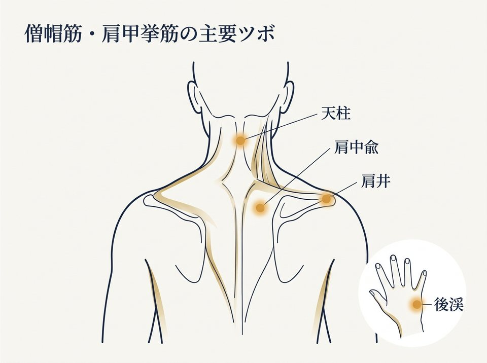

頚性神経筋症候群の鍼灸
首後ろの筋肉の過緊張が自律神経やリンパ循環を乱す状態。首肩の深層筋を鍼灸で緩め、全身の不定愁訴にアプローチします。


院長YouTube解説・関連動画
頚性神経筋症候群とは
頚性神経筋症候群は、頭痛やめまい、頸や肩のこり、自律神経失調症状や慢性疲労感、動悸や微熱、体がだるい、やる気が出ない、不眠やうつ状態などの自律神経失調症状など症状がたくさんあります。そのため、病院などに通う人もたくさんいます。
頚性神経筋症候群の原因は、首の後ろの後頚部にある筋肉が過剰に緊張することが関係すると考えられています。筋肉を緩める作用のある薬の改善だけでは効果が限定されてしまいます。そのため、筋骨格に直接働きかける理学的方法が必要になります。
理学的方法には牽引やマッサージ、鍼灸などがあります。頚筋の過剰な緊張は頸椎の位置ずれや可動性の低下などの骨格の異常と深く関係があります。その効果が一時的であったり、改善に対して抵抗性のある症状も多く見られます。
頭の重さは体重の約10％です。例えば、体重60kgの人は頭の重さは6kgです。この6kgを首が支えているということです。携帯電話を使用している時などにはうつむいている姿勢になります。
この時の頭の重さは本来の体重の10％の重さの約2～3倍にもなります。すると、首の筋肉は緊張してしまうため、首こりを感じやすくなります。慢性的に筋肉が緊張を強いられている場合、血行不良を起こし炎症が起こり始めます。
頚性神経筋症候群は全身に様々な症状が現れる
頚性神経筋症候群は、首の筋肉の緊張と原因不明の頭痛やめまい、疲労や多汗、不眠や胃腸症、血圧不安定などのなかなか改善しない不定愁訴の症状が現れる病気です。
首には副交感神経があります。副交感神経は内臓や血管、呼吸器などをコントロールする重要な神経の１つです。副交感神経が上手に働かなくなった場合、自律神経に異常がでてきます。自律神経に異常があると、全身に色々な症状が現れます。慢性化する症状が多い場合は、生活習慣や外傷が関わっていることもあります。
慢性化の原因
- •同じ姿勢での仕事や作業が多い
- •首を冷やしやすい環境にいる
- •常に仕事や日常生活で精神的緊張がある
- •１日の疲れが回復しないまま蓄積されている
- •事故やスポーツなどが原因で首を痛めたことがある
- •ストレスによって筋肉に過剰な緊張がある
- •外傷や生活習慣などにより、頚部の前方への弯曲が無くなり、首にかかる負担が大きくなるためストレートネックが起こっている
このような生活習慣や外傷が慢性化の原因に繋がります。
頚性神経筋症候群には筋骨格に働きかける理学的方法が必要
筋肉を緩める作用のある薬の改善だけでは効果が限定されてしまいます。そのため、筋骨格に直接働きかける作用のある理学的方法が必要となります。理学的方法には牽引やマッサージ、鍼灸などがあります。
西洋医学での判断は画像によるものがメインです。そのため、画像に映らないコリに対して語られることはあまりなく、画像に異常がない場合は改善に対する方法すら取られませんでした。しかしCNMSと呼ばれる病気の頚性神経筋症候群という名前ができ、今は西洋医学でも認められています。
頚性神経筋症候群の改善は、日常生活を送る上で日頃から前屈みな姿勢にならないように姿勢を正すことが基本になります。自分が普段使う椅子やベット、枕などを考えて使用してください。首の筋肉を緩めるためには、15～30分に1回、首や肩をまわしてリラックスさせてください。ホットタオルや入浴などで首を暖めることも改善に効果を発揮します。
ビタミンEとビタミンCは体の血流を良くする働きがあります。ビタミンEやビタミンCの含まれているかぼちゃやブロッコリーなどの野菜や果物を意識して摂ってください。カリウムやカルシウムは筋肉の神経や働きをよくします。
これは乳製品や緑黄色野菜に多く含まれているため、乳製品や緑黄色野菜も意識して摂ってください。さらに、十分な睡眠時間をとり、質の良い睡眠をすることも大切です。
頚性神経筋症候群では、自覚症状がでてきた時、注意が必要です。早期に重症化を防ぐことが重要です。首こりの他にも頭痛やめまいなどがある場合は脳神経科、腕や手のしびれがある場合は整形外科、吐き気や脱力感、息苦しさなどがある場合は心療内科に相談するのが良いと思われます。
消炎鎮痛薬や筋弛緩薬以外にもビタミン剤、湿布やローションなどの外用薬など症状にあった薬を使い、早めの対処をすることが必要です。
首の毒素は生活習慣の中で自然に溜まってしまうものです。朝起きた時に顔や目が浮腫むのもリンパ液の流れが滞ることで起こります。
デスクワークの人やスマホを長時間使う人は、首に疲れを感じやすく毒素が溜まりやすい傾向にあります。当院でも首こり難民をたくさん見ます。東京脳神経センターで形成神経筋症候群という判断を受けた人やストレッチ専門店で一生懸命ストレッチをしている人は首こりがすごく、首こり難民です。
体の中の排水システムは、血液が心臓から身体中を循環するようにリンパ液も体の隅々に流れており、老廃物を運び出すために重要な役割を果たしています。特に首回りは重要なリンパ管の通り道で、ここでリンパの流れが滞ると全身の健康に影響を与えかねません。
胸鎖乳突筋は耳の下から鎖骨まで通っている筋肉で、首を左右に回す時に使われます。この筋肉がしっかり働くことでリンパ管が圧迫され、リンパ液が効率的に流されています。デスクワークの人は胸鎖乳突筋が硬くなっているため、定期的にストレッチやマッサージをすることが大切です。
胸鎖乳突筋の周りには浅頸部リンパ節と神経部リンパ節という首のリンパの主要な通り道があります。頭や目、耳、首や口周りのリンパが全て通っているため、凝ってしまってここで止まると頭痛や肩こり自律神経失調症など色々な不調が現れます。
自律神経失調症が起きることには星状神経節という自律神経の核のような細胞神経の存在が関係しています。首のリンパ循環が悪くなったり毒素が溜まると、この星状神経節まで影響を受けるために動悸やめまい、不眠、便秘と下痢を繰り返すなど色々な症状が現れます。
また、僧帽筋も関係しています。僧帽筋は首や肩、背中にかけて広がる大きな筋肉で特にリンパの流れに関与しています。この筋肉が硬くなるとリンパ液の流れが悪くなり、首の痛みや肩こりの原因になります。首を後ろに寄せる動作を担当しているため僧帽筋の上の筋肉が硬くなると上を向きにくくなります。首の前側の通り道が伸び縮みすることができずにリンパや毒素が溜まってしまうのです。
首の前側にある細い３本の斜角筋という筋肉は、首の動きや肩の動きに連動してリンパの流れを助けてくれます。呼吸する時に肋骨を引き上げる作用をしているため首の毒素が溜まってしまうと呼吸がしにくくなります。うまく斜角筋が働かず、上を見ることができなくなると、胸鎖乳突筋が張りやすくなりリンパも毒素も溜まってしまうのです。
僧帽筋、斜角筋、胸鎖乳突筋をしっかり機能させることで、リンパ液を効率的に流し、首や肩こりを軽減させることに役立つのです。
首の毒素はリンパのゲル化と言われています。リンパ液は通常サラサラした液体ですが、体内のタンパク質が溜まるとゲル化するのです。首の毒素のリンパがゲル化するとリンパ液が流れにくくなり体の老廃物が蓄積されます。朝起きた時に顔が浮腫むのも、靴下のあとが消えないのもリンパ液の流れが悪い証拠です。
ゲル化するとリンパ液が流れにくくなり組織の間に余分な水分が溜まり浮腫が発生します。酸素や栄養の供給も滞り細胞の代謝が悪くなりニキビができやすくなったり肌がくすんだりします。
リンパ液がゲル化する原因は、ストレス、不規則な食生活、生活習慣、運動不足です。リンパ液は筋肉の伸び縮みでどんどん流れていくため、同じ生活スタイルで運動不足になるとリンパ液が溜まりすぎてゲル化し、より流れなくなるというマイナスのサイクルが起こるのです。
改善するためには、日常でリンパを流すセルフケアを行うことが有効です。また、バランスの取れた食事、生活習慣の改善や水分補給も重要です。
・水分補給
水をしっかり飲むことでリンパ液の粘り気がなくなり流れやすくなります。朝起きた時と寝る前にはコップいっぱいの水を飲む習慣をつけましょう。
・抗酸化食材を取る
食生活もリンパの流れに影響を与えます。リンパの流れをよくする食材は、抗酸化作用のあるベリー類やカリウムが豊富なバナナ、利尿作用のあるきゅうりなど、ビタミンCが豊富な柑橘類がおすすめです。これらの食品は体内の余分の水を出す手助けになります。
・運動習慣をつける
リンパの流れ、毒素は筋肉の伸び縮みで流れます。ウォーキングやストレッチなどを軽く行いリンパの流れを促進させます。座りっぱなしの時間が多い人は1時間に1回は立ち上がってセルフケアをしてほしいです。
・ストレス管理
ストレスが溜まると体が緊張してリンパの流れが悪くなります。日々のリラックス法としては深呼吸や瞑想もありますが、手軽にセルフケアを行うことで、ほぐれて正常神経系も安定して体もリラックスします。
・質の良い睡眠
睡眠はリンパの健康に重要です。睡眠は体が休まりリンパ液の流れが自然と回復するため毎晩の十分な休息は心がけましょう。
リンパを流すためには排水溝からほぐすことが必要です。キッチンを掃除する時に排水溝を掃除しないと水が溜まるように浮腫んだところをほぐそうとしてぐりぐりしようとしても全然流れません。
リンパの流れは一方向にしか流れていきません。特に首のリンパ毒は全て首の静脈角という排水溝に流れていきます。
セルフケアをするときは静脈角から浅頸部リンパ節、神経部リンパ節、胸鎖乳突筋斜角筋という順序で行わなければまた滞ってしまったりまた溜まってしまったりします。順序だけは守って行いましょう。
親指と人差し指で下から摘んで優しく揉んであげることが重要です。呼吸を深くしながらリラックスして行うと効果的です。
上の方に向かって揉み進めていきましょう。筋肉をゴリゴリするのではなく皮膚を伸ばすように流してあげます。鎖骨の付近からゆっくり軽く揉みます。胸鎖乳突筋は鎖骨から頭蓋骨の形状突起まで流れているためそこまでのばします。
この時点で横を向くと軽くなっているはずです。リンパが流れ、首周りがすっきりします。首の毒素であるリンパのゲル化が落ち着くと左右に向いた時の差が大きく現れます。まず片方行い、左右を向いた時の効果の差を比較してみましょう。
３〜５往復行います。肩が痛くマッサージを受けても改善しない人は首周りが凝っている人が多いです。マッサージに行っても胸鎖乳突筋までは揉まれないため自分で行うことが大事です。マッサージ師がマッサージすることもできますが、気道が近かったり正常突起の近くにあり思いっきり行うと逆に気持ち悪くなったりするため自分でやった方が適切です。
強い力で押すと筋肉が硬くなってしまい、経過が悪くなることもあるため自分で適度にやることがおすすめです。
まず肩を持ち上げます。緊張させた後、肩を下ろします。深呼吸しながら3〜5回行います。吸いながら肩をすぼめて吐きながら肩を下ろしましょう。
筋肉は縮む時と緩む時にエネルギーを使いますが、肩の構造は難しく肩甲骨を常に持ち上げているため常に働きっぱなしでなかなか縮むことがありません。1回縮めるとエネルギーが使われて僧帽筋が緩む働きになり、力を抜くと軽くなります。
その後、手のひらの指４本と母指球を握り首の後ろ側を全体的につまみ、皮膚を伸ばすようにします。筋肉をつまむというよりは首の後ろ側の肉を挟んで上に引っ張るイメージで下から上に向かって行いましょう。
手の幅は広いため3回ほどつまめば大体後頭部の方に行きます。3〜５往復くらい行います。
首の後ろ側の肉は厚いため４本指でつまむことがベストです。上に上がっていくと脂肪も厚くなるため摘みにくく痛いこともありますが、基本的に筋肉ではなく皮膚を摘んでいるため筋肉が硬くなることはありません。ここはしっかり行うことがおすすめです。
耳下腺や頭のリンパ液の中継地点が耳周りに集約されているため、耳周りをほぐすことで顔全体頭全体のむくみが取れます。
耳周りのほぐし方は、手で耳を掴んで回すことと真横に伸ばすことです。強くやらなくて良いですがゆっくりやりましょう。
10〜20回ほど回します。回しているうちに前側や後ろ側が伸ばされる感覚があるかもしれませんが、痛くなければ大きく回してください。
伸ばした時に耳周りが伸びる人は徹底的に行った方が良いです。そういう人は耳鳴りや眩暈、頭痛を発症していることが多いため、辛くなければ徹底的に行うことをお勧めします。
耳の中が引っ張られるような感覚があると最高です。上を向くと楽になっているはずです。痛みがある場合は胸鎖乳突筋、僧帽筋、耳周りをさらに徹底的に行いましょう。
４本指で頬骨の少し下のあたりを下に下がって押します。
耳の前側の大きい塊は耳下腺、顎下腺、舌下腺という唾液腺があるため絶対に押さないようにしましょう。唾液腺やリンパ腺は直接押してしまうと腫れて逆に悪くなってしまいます。そのため顎周りはおすすめしません。首の毒素が溜まりやすいポイントだけを押しましょう。
毎日の習慣として取り入れてほしいと思います。お風呂上がり寝る前など体が温まっている時に行うとさらに効果的です。体がリラックスしている状態で行うことがポイントです。
頚性神経筋症候群は、頭痛やめまい、頸や肩のこり、慢性疲労感や動悸、微熱、体がだるい、やる気が出ない、不眠、うつ状態などの自律神経失調症など、起こる症状が非常に多いです。さらに、症状が抽象的で具体的ではありません。いろいろなものが合わさった不確定要素の多い症状ばかりです。
生活習慣を見直し、セルフケアを行ってみましょう。
▼ 詳しく知りたい項目だけタップして開けます（全項目の医学解説を収録）
01. 原因とメカニズム
なぜ症状が起きるのか・鍼灸の作用機序を読む
▼
01. 原因とメカニズム
なぜ症状が起きるのか・鍼灸の作用機序を読む
体重の約10%ある頭をうつむき姿勢で支え続けると首には約2〜3倍の負荷がかかり、ストレートネックや同姿勢、冷え、ストレスで後頚部の筋肉が過剰に緊張します。その結果、首を通る副交感神経や星状神経節の働きが乱れ、リンパ循環の停滞も重なって全身に多彩な不定愁訴が生じる状態です。
なぜ鍼灸で改善へ向かうのか？（作用機序の図解）
頚性神経筋症候群に対する鍼灸は、トリガーポイント解放と疼痛抑制系の作用機序を通じて、お体本来の回復力を引き出します。
手技では届きにくい深層筋の硬結（トリガーポイント）へ繊細な鍼で直接刺激を届けます。
CGRPや一酸化窒素の放出により微小血管が拡張し、滞っていた発痛物質の洗い流しを促します。
脊髄後角で痛み信号を遮断し、脳幹からの内因性鎮痛物質（エンドルフィン等）の働きを高めます。
防御性の筋スパズムが解け、関節可動域と本来の動きやすさが段階的に回復します。
02. よくあるお悩み
このような症状はありませんか？（4項目）
▼
02. よくあるお悩み
このような症状はありませんか？（4項目）
- ✓慢性的な首・肩こりとともに原因不明の頭痛やめまいがある
- ✓慢性疲労感、動悸、微熱、多汗、胃腸不調が続いている
- ✓不眠ややる気の低下、気分が落ち込みやすい状態がある
- ✓朝起きると顔やまぶたがむくみやすく首が重だるい
03. 当院の施術アプローチ
施術の進め方・改善のポイントを見る
▼
03. 当院の施術アプローチ
施術の進め方・改善のポイントを見る
04. ツボ詳細・セルフケア一覧
首・肩・上腕のツボ図解とセルフケア（6穴）
▼
04. ツボ詳細・セルフケア一覧
首・肩・上腕のツボ図解とセルフケア（6穴）
実際の施術ではお一人おひとりの体質・症状に合わせて選穴しますが、首・肩・上腕（肩関節・頸椎・肩甲帯）の筋骨格系トラブルの臨床でよく用いられる代表的なツボの目安です。
| ツボ名 | 位置の目安 | 主な狙い | セルフケアの注意点 |
|---|---|---|---|
| 肩髃（けんぐう） | 腕を横に挙げたときに肩の前の角にできるくぼみ | 上腕二頭筋長頭腱炎・五十肩・肩関節周囲の痛みと可動域改善 | 炎症や夜間痛が強い時期は強く揉み込まず、温めや軽い圧迫に留めます。 |
| 臂臑（ひじゅ） | 肩の三角筋の先端（腕の外側の境目のくぼみ） | 上腕の重だるさ・腕を上げる際の引っかかり感・肩関節の負担軽減 | 骨に向かって垂直に3〜5秒じんわり押す程度が安全です。 |
| 天宗（てんそう） | 肩甲骨のほぼ中央、押すと響くくぼみ | 肩甲骨周囲の深層筋（棘下筋）の緊張緩和・腕への放散痛ケア | テニスボール等で強く押しすぎず、心地よい響きで止めます。 |
| 肩井（けんせい） | 首の付け根と肩先を結んだ線の中央 | 僧帽筋の過緊張緩和・首肩のこりや張り改善 | 妊娠中の方は強い刺激を避け、優しく温める程度にしてください。 |
| 風池（ふうち） | 後頭部の生え際、耳の後ろの骨と首筋の間のくぼみ | 頸椎周囲の深層筋緊張・首こり・肩腕への神経負担緩和 | 親指で頭の中心に向かって優しく支えるように押します。 |
| 曲池（きょくち） | 肘を曲げたときにできる外側のシワの先端 | 上腕〜前腕の筋膜連動の調整・肩肘の炎症・だるさ軽減 | 反対側の親指でゆっくり5秒押して離すリズムで行います。 |
05. 医学的根拠・国際査読論文（PubMed / Cochrane）
科学的エビデンス・出典リンク一覧（4件）
▼
05. 医学的根拠・国際査読論文（PubMed / Cochrane）
科学的エビデンス・出典リンク一覧（4件）
国際的な医学データベース（PubMed・Cochrane等）で報告されている首・肩・上腕（肩関節・頸椎・肩甲帯）の筋骨格系トラブル領域の代表的な査読済み鍼灸研究をまとめています（標準治療との併用や研究上の限界を含めて正確に掲載）。
| 年・研究デザイン | 対象・規模 | 主な結果 | 限界・出典 |
|---|---|---|---|
| 2018年 IPDメタ解析 | 慢性筋骨格痛・頭痛 39 RCTs（n=20,827） | 全領域でシャム鍼・無治療比とも有意優位（P<0.001）、1年後も効果低下約15%で持続。 | 対照設定により効果量変動。 J Pain (PMID: 29198932) |
| 2020年 Cochraneレビュー | 慢性非特異的腰痛 33 RCTs（n=8,270） | 無治療比で直後疼痛（MD -20.32）と機能（SMD -0.53）が臨床的に有意改善。有害事象は軽微。 | 施術者盲検化不可・確実性は中等度〜非常に低。 Cochrane (PMID: 33306198) |
| 2024年 多施設RCT | 慢性坐骨神経痛 216名（6病院・52週追跡） | 4週時点の下肢痛VAS減少30.8mm vs 14.9mm（差-16.0mm, P<0.001）、52週後も持続。 | 中国3次病院限定・施術者盲検化不可。 JAMA Intern Med (PMID: 39401008) |
| 2016年 メタ解析 | 変形性膝関節症 10 RCTs | 短期（13週）で疼痛（WMD -1.24, p<0.001）と機能（p<0.001）が有意改善、26週も機能維持（p=0.016）。 | 試験間の異質性が高く運動療法併用が推奨。 JBJS Am (PMID: 27655986) |
参考文献・出典
- 2018年 IPDメタ解析（慢性筋骨格痛・頭痛 39 RCTs（n=20,827））— J Pain (PMID: 29198932)
- 2020年 Cochraneレビュー（慢性非特異的腰痛 33 RCTs（n=8,270））— Cochrane (PMID: 33306198)
- 2024年 多施設RCT（慢性坐骨神経痛 216名（6病院・52週追跡））— JAMA Intern Med (PMID: 39401008)
- 2016年 メタ解析（変形性膝関節症 10 RCTs）— JBJS Am (PMID: 27655986)
06. よくある質問（FAQ）
よくあるご質問を見る（2件）
▼
06. よくある質問（FAQ）
よくあるご質問を見る（2件）
Q. 薬を飲んでも首こりや不定愁訴が改善しないのはなぜですか？
頚性神経筋症候群は後頚部の筋肉の過剰な緊張が引き金となっているため、薬物療法だけでは限界があり、鍼灸など筋肉へ直接働きかける理学的アプローチが重要になります。
Q. 自宅で首をケアする時の注意点はありますか？
静脈角からリンパ節、胸鎖乳突筋や僧帽筋上部へやさしく流すのが基本で、唾液腺は直接押さないようにしてください。首を冷やさずこまめに姿勢を変えることも有効です。
あわせて読まれる関連疾患（筋肉、骨のお悩み）
お尻から足後ろ側へ広がる痛みやしびれ。原因を見極め、腰・臀部・股関節の深層筋へ的確にアプローチします。
40〜60代に多い肩の激痛・可動域制限（五十肩）を、炎症期と拘縮期の見極めと鍼灸・全身バランス調整で改善する解説。
HTLV-1ウイルス感染者の一部に発症し、脊髄の炎症により両下肢のつっぱり・歩行障害や排尿障害が徐々に進む疾患です。
成長期の中高生がスポーツ中の急激な筋収縮により、骨盤の骨端線付着部で骨の一部が剥がれて起こる骨折です。
免疫系が自身の筋組織を攻撃して炎症と変性を起こし、対称性の筋力低下や筋痛をきたす全身性のリウマチ性疾患群です。
骨端軟骨とその周囲の軟部組織にX線上の点状石灰化像がみられ、低身長や関節・脊柱の異常を伴う遺伝性疾患群の総称です。
CLINICAL RECOVERY CASES
✨ 実際の臨床改善事例・回復経過を見る
銀座本院をはじめ各院での実際の改善事例を症状別に絞り込んでご確認いただけます。
おひとりで悩まず、まずはご相談ください
銀座本院・川口・大宮・横浜・博多・田無の各院でご予約を承っております。